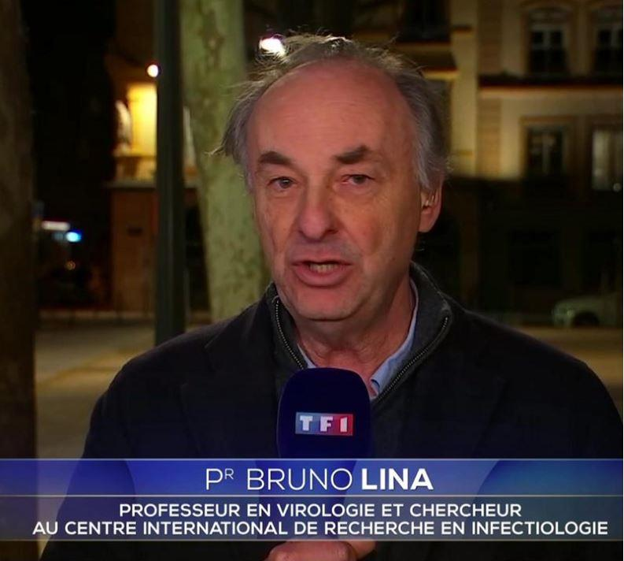
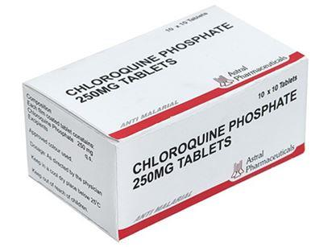

C’est un brûlot criant de vérité que nous offre le Professeur Christian Perronne avec Y a-t-il une erreur qu’ILS n’ont pas commise ? Paru chez Albin Michel en Juin 2020. L’ouvrage porte en sous-titre et en rouge : Covid-19 : l’union sacrée de l’incompétence et de l’arrogance.
Il n’y a là rien d’exagéré, le sous-titre parait même modeste en regard de la suite des événements. L’ouvrage résume bien la situation politique et sanitaire créée en France par la Covid-19 et sa gestion jusqu’en juin 2020. Car lorsque le Professeur Perronne a publié son ouvrage, ou lorsque ce dernier était sous presse, The Lancet, la célèbre et prestigieuse revue « scientifique » n’avait pas encore fait paraître son étude scandaleuse, commandée par Big-Pharma dans le seul but évident de flinguer l’hydroxychloroquine. Devant l’énormité du scandale cette étude a été déniée quelques jours après parution. Et pour cause ; elle était truffée d’erreurs qu’un étudiant en première année de n’importe quelle discipline aurait décelées :
- Pour la France, le Big Data utilisé s’appuyait sur des données ethniques qui sont totalement interdites dans l’Hexagone, donc inexistantes, donnant des chiffres complètement fantaisistes !
- Des hôpitaux qui n’avaient transmis aucune donnée se voyaient cités dans l’étude !
Le Ministre de la Santé française, pourtant médecin de profession, profita de l’aubaine pour stopper toutes études et tous les essais cliniques incluant l’hydroxychloroquine. La manœuvre est lourde et sans finesse. De plus, elle était inutile, vu que le travail avait déjà été fait par un décret du même ministre, réservant l’hydroxychloroquine aux seuls médecins des hôpitaux sous autorité militaire et aux malades gravement atteints !
La presse écrite ne fut pas tendre avec The Lancet et il y avait de quoi :
« -Ariane Anderson, la directrice vente et marketing de QuartzClinical, la base de dossiers médicaux de Surgisphre, qui a fourni les données de l’étude, serait une actrice porno, call-girl à ses heures perdues. »
Valeurs Actuelles du 04 juin 2020.
« Deux des plus grandes revues médicales mondiales ont dû retirer des articles sur le Covid-19 fondés sur des données plus que douteuses. Une surprise ? »
Le Point, 09 juin 2020.
La tendance générale de la presse est intéressante à étudier dans l’affaire du Covid-19 : au début les journalistes ou les médecins de plateaux n’hésitaient pas à dire avec ironie « qu’il y avait en France 65 millions d’infectiologues ». Puis, la querelle sur l’hydroxychloroquine se faisant virulente et intéressant le public, la méthode a radicalement changé : on fait paraître études sur études « scientifiques » des articles « démontrant » l’inutilité de ce traitement, voire sa dangerosité. Avec des titres sans appel :
« Covid-19 : l'étude qui douche les espoirs autour de l'hydroxychloroquine »
Le Point, 27 août 2020
Le journal cite une étude de métadonnées, parue dans une revue scientifique sans tenir compte de l’étude précédente de The Lancet sur les métadonnées et de sa triste fin… Les attaques contre le professeur Raoult se font plus personnelles. À défaut, c’est le public qui est attaqué :
« Depuis quand le citoyen lambda dispose-t-il des connaissances scientifiques pour affirmer que la chloroquine est le remède ad hoc contre le virus ? »
Entretien avec Yves de Kerdrel, Valeurs Actuelles, numéro 4369 du 20 août 2020
Le citoyen « lambda », pour ne pas dire le peuple n’est pas composé uniquement d’ignorants ou d’illettrés comme le pense une certaine élite. Les politiques de santé publique concernent le public, la politique étant au sens noble la vie de la cité, le citoyen est concerné. C’est dans le corps du citoyen que l’on va injecter des vaccins et… de l’aluminium. À moins de penser comme les élites que :
« Il faut laisser les médecins, les chercheurs, les savants établir la vérité, j’ai toute confiance dans la capacité de nos meilleurs cerveaux à trouver un vaccin contre le Covid-19. Et qu’il soit mis fin à ce débat byzantin pour ou contre un médicament qui n’est pas anodin, aussi répandu soit-il. »
Ibidem, Valeurs Actuelles du 20 août 2020
Nul besoin d’avoir une immense culture politique pour savoir que des savants, des médecins, des chercheurs ont démontré scientifiquement, à une certaine époque, en certains endroits que les juifs étaient de race inférieure. On peut d’ailleurs se demander depuis quand le journaliste lambda dispose-t-il de connaissances en infectiologie pour affirmer que le vaccin est la solution et que la chloroquine n’est pas anodine ?
L’ouvrage du Professeur Perronne se présente sous la forme de onze chapitres/scandales. Le premier scandale étant bien évidemment celui des masques :
Scandale 1 : « Zut on est en pénurie de masques !»
« En 2013, c’est François Hollande qui est président. Il décide de ne pas renouveler le stock de masques français. […] Jérôme Salomon ne prend pas non plus fourche ou flambeau pour acculer le chef de l’État d’alors à commander des masques. Et il est conseiller en charge de la sécurité sanitaire au sein du ministère de la santé. Il sait de quoi il parle, tout de même ! Et à ce moment là, il nous dit clairement qu’on n’a pas besoin de masques. » p.16.
Quatre ans plus tard, le même Jérôme Salomon a prévenu le candidat Macron, pendant la campagne électorale de 2017, que la France n’est pas prête à faire face à une urgence sanitaire. Information relayée par Wikileaks et le journal l’Opinion. Le peu de masques que nous avions a été distribué en « solidarité » à…Wuhan :
« Avant de nous quitter, la ministre de la Santé Agnès Buzyn prend deux mesures phares, confirmées par son successeur Olivier Véran, quand il arrive le 17 février : il envoie à l’étranger les derniers masques qui nous restent, c’est déjà très fort, mais, et c’est encore plus fort, il ramène le virus en France, à bord des avions de l’armée de l’air. C’est l’un des aspects les plus méconnus de la crise sanitaire qui nous a frappés. »p.19.
Ce sont en effet 17 tonnes de matériels (dont des masques) que la France a envoyés à Wuhan et le premier foyer infectieux est situé dans l’Oise, à la base aérienne de Creil. Si les ressortissants qui ont été évacués de Chine ont été confinés, le personnel, civil et militaire, en contact avec eux ne l’a pas été.
« Pendant ce temps, dans de nombreux pays, y compris en Europe, on distribue gratuitement des masques à l’entrée des transports en commun. » p.25.
Cette pénurie de masques fut ressentie cruellement par les soignants qui contractaient la maladie. Les médecins et les auxiliaires de santé, dans les hôpitaux, dans les cabinets libéraux, étaient en manque de cet accessoire indispensable de protection ! Pendant plusieurs semaines il fut impossible aux professionnels et aux particuliers de se procurer des masques. Des volontaires, à l’initiative des mairies et des Conseils Généraux, en ont fabriqué des dizaines de milliers en tissu. Plus généralement tous les gens dont la profession nécessite un contact avec le public ont énormément souffert de cette pénurie qui a été ouvertement niée par le Président de la République :
« Il y a eu une doctrine restrictive pour ne jamais être en rupture de masques, a déclaré Emmanuel Macron, sur BFMTV le 18 mai « ensuite un approvisionnement et une production renforcés et nous n’avons jamais été en rupture. Ce qui est vrai, c’est qu’il y a eu des manques, des tensions 1»
Il n’y a absolument rien à dire après cela. Seulement constater qu’au début de la pandémie le masque fut déclaré « scientifiquement » inutile, il devint « scientifiquement » obligatoire quelques semaines après et l’amende pour absence de son port s’élève à 135 euros, le prix à la vente de l’accessoire a été multiplié par 19 entre le début de la « crise » du Covid-19 (février 2020) et juillet 2020. Cette création d’État d’un « comité scientifique » tout puissant déchargeant le gouvernement de ses responsabilités ne peut être lue que comme le prélude avancé à une dictature sanitaire.
Scandale 2 : « Oh surprise ! On n’a pas assez de tests non plus… »
« Combien de laboratoires de biologie, incluant des laboratoires de recherche, se sont proposés de faire chacun des milliers de tests diagnostiques par jour ? Mais contrairement à l’Allemagne qui, grâce à cette mobilisation des biologistes, a pu réaliser des millions de tests, on les a ignorés. » p.12.
En effet, les laboratoires vétérinaires « affirment pouvoir réaliser 300 000 tests par semaine. Parce qu’ils ont tout ce qu’il faut pour cela : machines et réactifs. […] Ainsi, si incroyable que cela puisse paraître, le gouvernement refuse. […] Seuls les laboratoires de biologie médicale sont autorisés à effectuer des tests. Pas les autres. Et ça restera comme ça. Un point c’est tout. » pp.33-35.
La spécialité du gouvernement tout au long de ces scandales sanitaires fut l’attentisme. Pour chaque procédure, tant de soins, que d’analyse, de dépistage ou de matériel :
« Il fallait par une longue, très longue procédure vérifier que la lance à incendie était homologuée avant de se risquer à combattre les flammes. » p.11.
Scandale 3 : Le Conseil scientifique est frappé d’une nouvelle maladie : l’attentisme.
Nous nous contenterons pour ce chapitre d’une seule citation de l’un de ces éminents représentants de la science infuse :
« Le plan français contre les pandémies est considéré par l’Organisation mondiale de la santé comme le meilleur. Aujourd’hui on arrive à s’appuyer sur cet outil. (Bruno Lina) » p. 42.
Non seulement ces propos ne sont étayés par aucune référence au niveau de l’OMS, mais nous avons vu le « plan » français à l’œuvre. On pourrait bien sûr en rajouter à toutes les inepties déclamées par des voix sûres d’elles, mais cela ferait beaucoup trop.
Nous nous contenterons des déclarations de Madame Agnès Buzyn, Ministre de la santé, médecin, mais qui ne fera pas partie de ce Comité Scientifique :
« Le 24 janvier, elle s’adresse à la France et dit que « le risque d’importation [du virus] depuis Wuhan est quasi nul. » p.108.
Ce qui ne l’a pas empêchée par la suite de dire qu’elle avait prévenu tout le monde que le tsunami allait arriver. Mais le mieux pour voir où emmarge tout ce beau monde du Conseil Scientifique ou des personnes qui ont piloté des essais en toute objectivité est de lire le court article de FranceSoir « Revenus versés par BigPharma. A partir de 12 on a un foyer épidémique de conflits d’intérêts ? » 2
Au sujet de l’attentisme le Professeur Perronne s’interroge : « combien de morts auraient pu être évités ? » p.13.
-25 000 selon ses propres dires sur plusieurs radios. Suite à ces déclarations, l’Ordre des médecins a lancé une procédure contre Le Professeur Perronne. Comme il le déclare si bien du gouvernement : Ils n’ont rien fait et ils ont empêché de faire.
Il est évident que chacun des chapitres/scandales que déploie brièvement le Professeur Perronne dans son ouvrage demanderait plusieurs ouvrages ; tant les bourdes, les absences totales de stratégie, les ordres et contre-ordres émanant d’une même autorité, les déclarations contradictoires entre divers ministères, entre la présidence et les ministères furent nombreux. Il est impossible par contre de faire l’impasse sur le scandale numéro 6, le chapitre concernant la chloroquine.
Scandale 6 : La chloroquine, qui dit que c’est efficace ?... à part la moitié de la planète
« Jusqu’au 13 janvier 2020. Jusqu’à cette date elle était en vente libre en pharmacie. Comme le doliprane. Et moult autres. Et s’il s’était agi d’une erreur, on a mis bien longtemps à la réparer, puisqu’elle a été en vente libre pendant plus de cinquante ans. Au passage, sachez que c’est Agnès Buzyn, alors ministre de la Santé, qui a classé l’hydroxychloroquine en « substance vénéneuse ».
On ne pourra, dorénavant, l’avoir que sur ordonnance. » p.93.
« S’il c’était agit d’une erreur… » L’auteur fait ici allusion à la propagande d’état qui a précédé l’interdiction du médicament. Cette médication était effectivement en vente libre en pharmacie ; elle est soudain devenue extrêmement dangereuse et entraînerait des troubles cardiaques. Mais les consignes gouvernementales pour les patients potentiellement atteints du Covid-19 consistaient à rester chez soi et prendre du doliprane. Or, aucune étude en double aveugle n’a été effectuée sur des patients atteints de Covid-19 prenant du doliprane. Le Conseil de l’Ordre n’a pas bougé une oreille lorsque les médecins furent touchés dans leurs prérogatives libérales : prescrire librement les médications qui leur semblent nécessaires.
Les non sens furent la norme de gestion de ce scandale sanitaire. Des méthodologistes obstinés, jouant les idiots utiles de big-pharma en se prenant pour des scientifiques de haut vol, réclamèrent à cor et à cri des études randomisées sur la chloroquine, sans tenir aucun compte des études qui avaient déjà été effectuées dans le monde. Le professeur Perronne cite ces études et les essais effectués par divers pays :
« Corée du Sud (150 participants), en Norvège (202 participants) aux États Unis (1500 participants, au Mexique (500 participants), en Espagne (3040 participants)…
En Corée du Sud on traite déjà à l’hydroxychloroquine, sans attendre les résultats de telle ou telle étude. Ils ont 174 morts le 3 avril. Nous le même jour, 6507. » pp.94-95.
On peut faire dire ce qu’on veut aux chiffres mais les faits sont là et les faits sont têtus : La Corée du Sud n’a pas confiné, elle a géré la crise sanitaire dans l’intérêt de sa population en utilisant l’hydroxychloroquine, qui bien sur… ne marche pas ! Le Pr. Perronne cite une étude chinoise dans laquelle il est signalé que 80 patients atteints de lupus et traités au long cours à l’hydroxychloroquine, aucun de ces 80 patients n’a développé la maladie. L’étude en déduit que l’hydroxychloroquine a un effet préventif.
Le Professeur revient amplement sur le travail réalisé par Didier Raoult et constate qu’avec l’ajout d’un antibiotique (l’azithromycine) à l’hydroxychloroquine, ce qu’a fait le professeur marseillais, on observe une disparition plus rapide du virus par rapport aux données historiques chinoises :
« Dans le groupe des personnes le plus à risque, le taux de guérison a été de 98,7 %. De plus, la mortalité observée chez les personnes les plus âgées est tombée à 0,75 %. Ce résultat est magnifique, quand on observe sur les chiffres de Santé publique France que pour les personnes de plus de 70 ans hospitalisées pour Covid-19, la mortalité peut atteindre 30 %, voire 50 %. P103/104
Pendant ce temps, début mai, la France bat le record du monde de la létalité due au coronavirus. Et l’Hexagone est le seul pays du monde à interdire la prescription d’hydroxychloroquine, sauf pour les mourants. Cherchez l’erreur. » p.105.
Le 29 mai, la Russie qui n’a pas interdit le traitement à la chloroquine, comptait 4 374 personnes décédées du Covid-19. À la fin mai la France dépassait les 28 000 morts.
Paradoxalement, le plus grand adversaire de l’hydroxychloroquine fut l’un de ses partisans qui en a pris à titre prophylactique, il a eu le simple tort de s’appeler Donald Trump et d’avoir été suivi par le Président Brésilien Bolsonaro. À partir de là, la preuve scientifique de la nocivité de l’hydroxychloroquine était faite : ce médicament ne rentrait pas dans le cadre du progressisme.
Le scandale 7 : certains savaient…
Le chapitre sept vaut également le détour pour les citations des responsables politiques. Le 3 mars sur BFM Olivier Véran, Ministre de la Santé déclarait :
« L’hôpital français est prêt. La médecine de ville est prête. Nous faisons en sorte de fournir tout le matériel nécessaire. » p.111.
Nous sommes prêts et archi-prêts, il ne manque pas à notre armée un bouton de guêtre !" déclarait le Général Le Bœuf, ministre de la Guerre de Napoléon III, avant la catastrophe de Sedan !
L’union sacrée de l’incompétence et de l’arrogance est bien le sous-titre du livre….
Dans ces scandales sanitaires qui dépassent tout ce qui a été connu à ce jour, tout fut dans la communication, la com’ comme disent les branchés. Sans prendre en compte les bourdes extraordinaires de la porte parole du gouvernement qui est hors compétition depuis le début !
- Le montage d’un hôpital militaire de campagne, annoncé à grands renforts de Journal Télévisé de 20 heures a demandé une dizaine de jours de mise en place et de montage pour une contenance de 30 lits !
Les chinois, dans le même temps, ont construit deux hôpitaux en dur de plusieurs milliers de lits !
En cas d’attaque biologique, nous sommes prêts, archi-prêts, il, ne manquera pas une seringue !
- Le transfert en TGV « sanitaire » de Paris à la Bretagne pour quelques dizaines de patients, qui passe au JT de 20 h… alors que les hôpitaux privés parisiens étaient prêts et attendaient les malades, les réclamaient même… en vain !
Le « nous sommes en guerre » martial et comico-tragique martelé par Emmanuel Macron. La première chose à faire en guerre c’est de fermer les frontières. Ce qui ne fut pas fait, car « le virus n’a pas de passeport », selon le président. Et le porteur du passeport ? « Nous sommes en guerre » et les soldats sont envoyés au front sans fusils, sans casques et sans munitions.
Le scandale 11 : « Méchants français qui accusent leur gentil gouvernement. »
…vaut également le détour, le gouvernement prêche l’union sacrée dans la lutte contre le Covid ; « Unité, unité, nous devons tous ensemble lutter contre le virus » demande-t-il dans l’espérance que l’opposition se taise. Toute contestation sera assimilée à une haute trahison ! Et il n’a pas tort : la contestation politique est quasiment invisible ! De temps en temps, de ci de là, une déclaration de principe. Mais que peut l’opposition LR ? C’est un des leurs qui tient la barre ! Que peut la gauche ? Eux aussi tiennent la barre : Olivier Véran avant de rejoindre la macronie était un élu du PS…
Certes des pétitions qui ne servent à rien circulent, des prises de parole sur Internet ont lieu, mais dorénavant les géants du Net, les GAFA, censurent ouvertement le mot « hydroxychloroquine » :
« Les nouveaux maîtres du monde le revendiquent désormais haut et fort : tout ce qui conteste le Dogme imposé par Big Pharma par le truchement de l'OMS sera effacé séance tenante. Le CEO d'Alphabet, maison-mère de Google, l'a expliqué devant la commission d'enquête du Congrès américain 3, de même que Mark Zuckerberg 4: tout contenu qui osera prétendre que l'HCQ a un effet thérapeutique contre la Covid sera traqué et détruit.5
Le 29 juillet 2020, alors que l’essai « Discovery » est rebaptisé par les médecins « Fiascovery » sans aucun résultat tangible, la Commission européenne a commandé de quoi traiter 30 000 patients au remdesivir pour la modique somme de 63 millions d’euros auprès du laboratoire américain Gilead.
Coût moyen d’un traitement par remdesivir : 2000 euros par patient. Coût moyen de traitement à l’hydroxychloroquine et azithromycine par patient, selon le protocole de Didier Raoult : 20 euros.
Le Professeur Perronne s’illusionne peut-être sur les commissions d’enquête parlementaire ; après la commission d’enquête sur l’affaire d’Outreau, le juge Burgaud, qui a brisé des dizaines de vies, a continué ses activités dans l’administration judiciaire et a été promu par décret du 21 décembre 2017. L’affaire Benalla a, elle aussi, fait l’objet d’une commission d’enquête parlementaire. Quels résultats ?
Alors, une enquête parlementaire sur la gestion du Covid…
En attendant, pour ne pas désespérer la France périphérique, depuis le 7 juillet 2020, l'ouverture d'une information judiciaire visant Olivier Véran, Agnès Buzyn et Édouard Philippe pour leur gestion de la crise du Covid-19 est ouverte auprès le Cour de Justice de la République.

Partager cette page